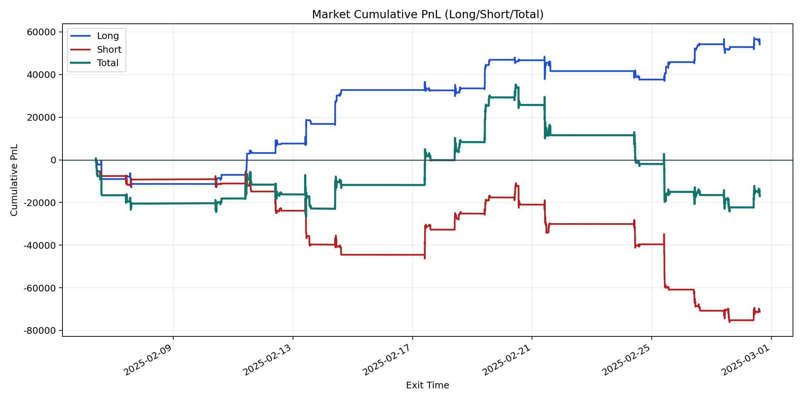
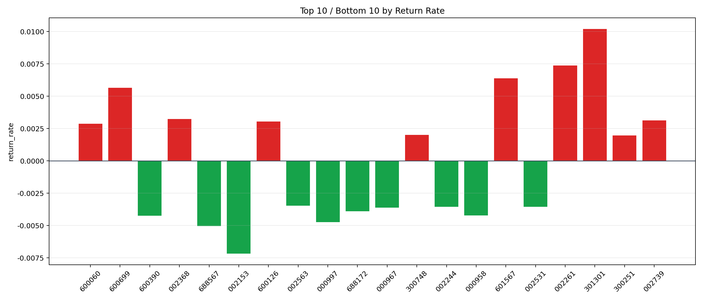

| repo_root | /home/haoranyou/data/output/dynamic_AUM_TAKER_index500 |
|---|---|
| period_months | 1 |
| period_label | 2025-02-06_to_2025-02-28 |
| start_time | 2025-02-06 09:48:07 |
| end_time | 2025-02-28 14:45:22 |
| n_trades | 9062 |
| n_symbols | 74 |
| total_pnl | -16792.604950001492 |
| long_total_pnl | 54402.01840000084 |
| short_total_pnl | -71194.62335000234 |
| total_entry_notional | 173363415.0 |
| long_entry_notional | 68108947.0 |
| short_entry_notional | 105254468.0 |
| total_return_rate | -9.686360268111638e-05 |
| long_return_rate | 0.0007987499557143475 |
| short_return_rate | -0.0006764047617437232 |
| top_symbols_by_return | ["301301", "002261", "601567", "600699", "002368", "002739", "600126", "600060", "300748", "300251"] |
| bottom_symbols_by_return | ["002153", "688567", "000997", "600390", "000958", "688172", "000967", "002244", "002531", "002563"] |

